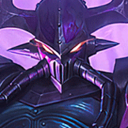
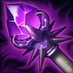
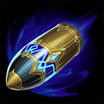

起手裝備
- 增幅典籍
加快前期清線與沉默換血。

Kassadin · 85% 承傷／高機動後期 AP 刺客
前期最重要的是別送。用 1 技沉默與魔法盾換血，3 技清線；大絕不要一直疊滿拿來走路，團戰前保留魔力，真正要切後排時再連跳。
本站當時評級理由：卡薩丁在標準 ARAM 有 85% 承傷，等級與魔力裝成形後能靠低冷卻大絕反覆切入；五人持續施法也讓 3 技更容易強化。弱點是前期手短且非常吃魔力管理，若第一輪死太多次會延後時光與大天使成形。
Riot 5.3b 標準 ARAM：卡薩丁承傷 90%→85%。近期未列後續標準 ARAM 回調，本站維持 100% 輸出／85% 承傷。7.2 重做多件法師裝，時光之杖提高最終魔力、降低最終法強。
加快前期清線與沉默換血。

生命、魔力與成長屬性讓卡薩丁更快進入中後期。

大量魔力直接支撐連續虛空行走，護盾也提高切入容錯。

三件套後大幅拉高所有技能爆發。
大絕使用頻率高，提供魔力與大絕相關輸出收益。

7.2 後更偏純爆發，適合卡薩丁後期收殘血。

補魔力與法強，前中期最順。

三級鞋補法穿，對脆皮爆發更高。

大絕先手切入很容易先造成傷害，放大整套爆發。
增加最大魔力，讓長時間單線消耗更穩定。
技能加速讓 1、3 技循環更順。

ARAM 常拖到高等級，後期法強收益高。

每次虛空行走都能穩定觸發。

保留最可靠的進退與關鍵技能銜接；雪球戰車進場後仍可用閃現修正位置。

雪球命中後可等待隊友跟上再進場，讓近戰英雄在單線拉扯中擁有穩定的接戰與追擊角度。
3 技 > 1 技 > 2 技
ARAM 開局三個基礎技能各點 1 級，之後主升 3 技、次升 1 技；大絕能點就點。
5 級前以安全吃經驗為主，1 技沉默對方主要法師，3 技在多人施法環境很容易強化。
時光＋大天使後開始能反覆進出。先用一層或兩層大絕接近，別在真正開戰前把魔力燒光。
85% 承傷讓你比一般刺客更能容錯，但仍不要第一個吃硬控。等前排交技能後連跳後排，擊殺後立刻改位置，不要在同一區停留。
 虛空之杖
虛空之杖替換無限寶珠，提供 40% 法穿。
 水仙三叉戟
水仙三叉戟替換惡意或無限寶珠，專門處理護盾。
 女妖面紗
女妖面紗替換一件輸出裝，用法術盾提高第一次切入成功率。
獨立歷史資料：7.2b 分類評級。7.3a 僅有部分增幅公告欄位校正，英雄分類適配與出裝未因此全面重評；不套用到標準 ARAM。
看遊戲卡片下方分類 → 點相同分類 → 看左側 S+／S／A。
三技能與大絕是主要爆發來源，技能循環直接決定進出場頻率。
大絕可以短時間連續位移，是身法類增幅最容易高頻觸發的英雄之一。
大絕連跳會快速提高魔力消耗，魔力類增幅能直接延長輸出時間。
每次大絕衝刺後都能利用穿透、防禦與追擊效果。
技能暴擊、施放大絕無敵與保命重置都能大幅提高卡薩丁進場上限。
多次大絕與技能連招可以快速觸發額外範圍傷害。
v80.12.0 ARAM A 第三批：卡薩丁套用標準 ARAM 85% 承傷，並同步 7.2 法師裝改版後的時光／大天使核心。｜v93 7.2d 標準 ARAM 全量校正：已複核 Tier、標準 ARAM 模式修正、7.2c／7.2d 英雄與道具、現行符文名稱及雪球戰車；無額外異動者沿用已驗證配置。